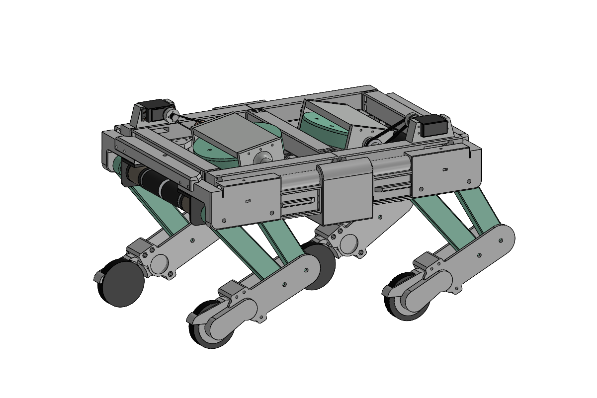
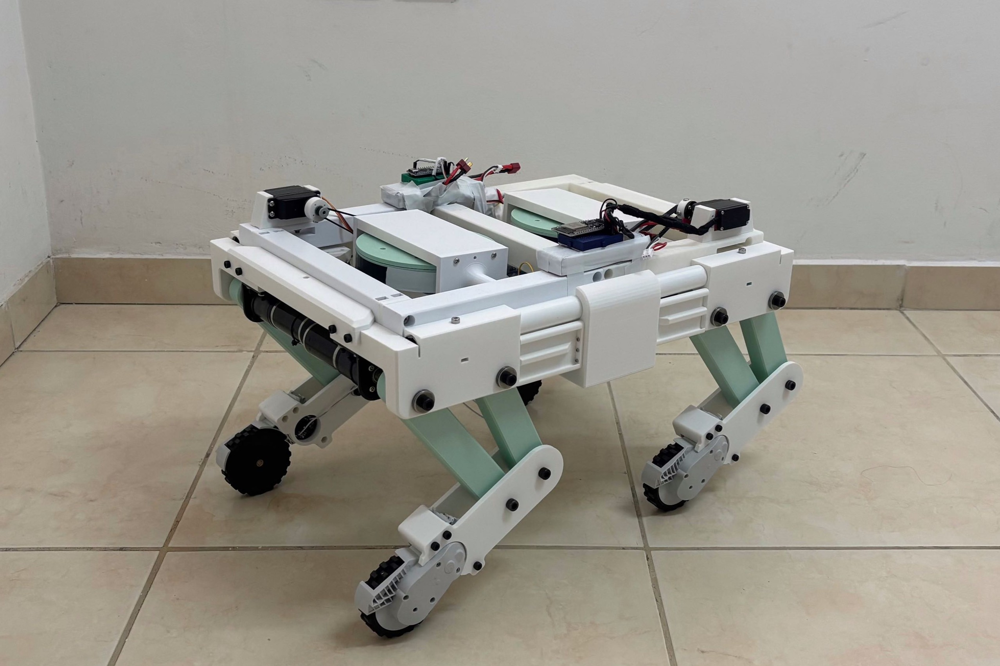
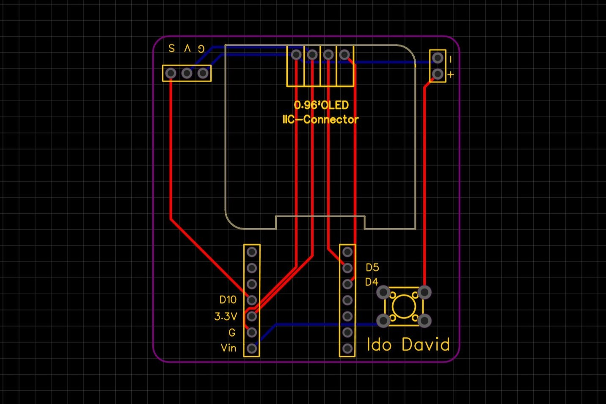
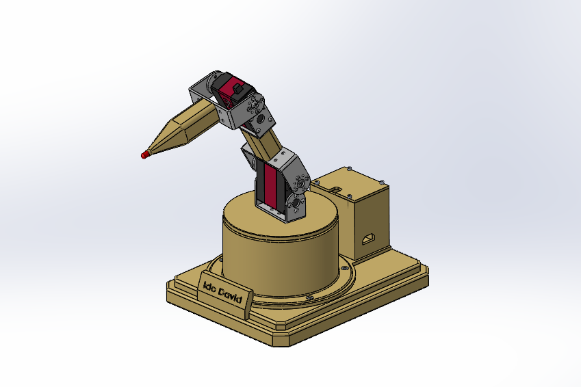
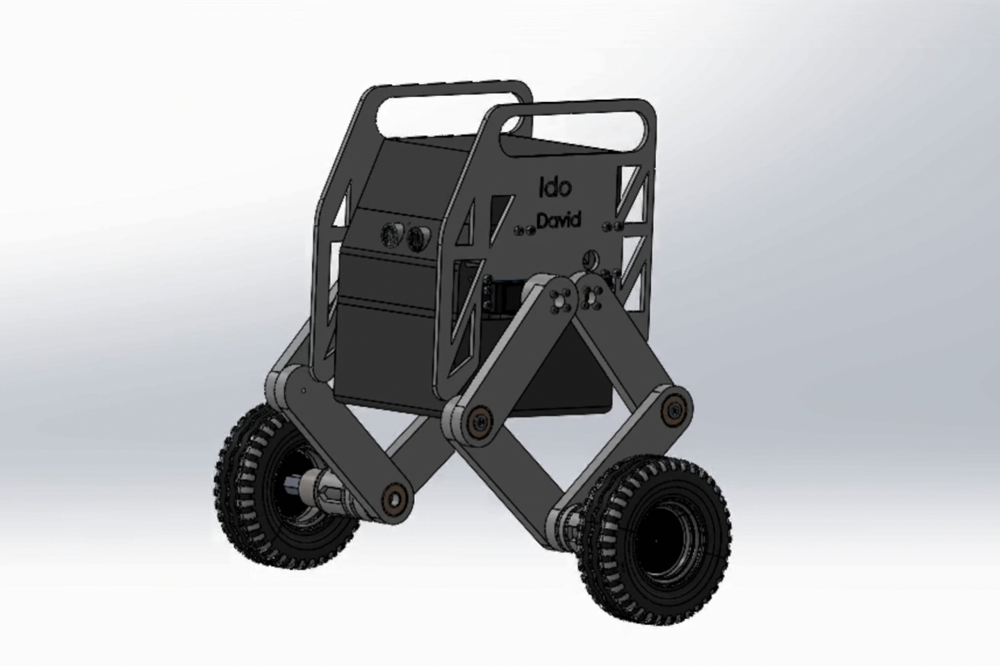

Ido David
Mechatronics & Mechanical Engineer
Mechatronics & Mechanical Engineer

Developed a hybrid quadruped-wheeled robot featuring an active self-stabilization system utilizing a Control Moment Gyroscope (CMG).
For my final research project, I developed a hybrid quadruped wheeled robot. The goal of the study was to examine the effect of integrating a Control Moment Gyroscope (CMG) as an additional active stabilization element for improving the robot’s stability.
The robotic system includes a Proportional controller for correcting the robot’s lateral tilt. In addition, the CMG system generates active control moments to provide further stabilization.
As part of the research, experiments were conducted with and without the CMG system, while applying controlled dynamic disturbances, in order to evaluate its contribution to improving the robot’s dynamic stability.


Designed and manufactured a custom PCB for an IR-based rotational speed sensor. The system integrates an OLED display for real-time data visualization and a custom 3D-printed enclosure designed for industrial environments.
More details about the schematic design, component selection, and iterations of the 3D printed enclosure.

Designed and programmed a 3-Degree-of-Freedom (DOF) robotic arm. Successfully developed and implemented inverse kinematics algorithms to accurately calculate the required joint angles for precise 3D spatial positioning of the end-effector.
Expanded explanation of the transformation matrices and DH parameters used to solve the inverse kinematics equations.

Engineered a two-wheeled self-balancing robot utilizing a custom-tuned PID controller. Implemented real-time sensor fusion to continuously calculate the tilt angle and apply corrective motor outputs, maintaining upright stability under dynamic physical disturbances.
Detailed view of the PID tuning process, Ziegler-Nichols method (if applicable), and sensor filter implementations like the Kalman filter or complementary filter.
Mechanical engineer specializing in electro-mechanical and opto-mechanical systems. Experienced in integrating high-precision machinery within clean-room environments.
Currently pursuing a Master of Science (M.Sc.) in Robotics and Control, focusing on building intelligent control systems and end-to-end robotic solutions.
Feel free to reach out for professional opportunities or collaborations:
Email: idodavid2244@gmail.com
Phone: 052-4280941
Connect on LinkedIn